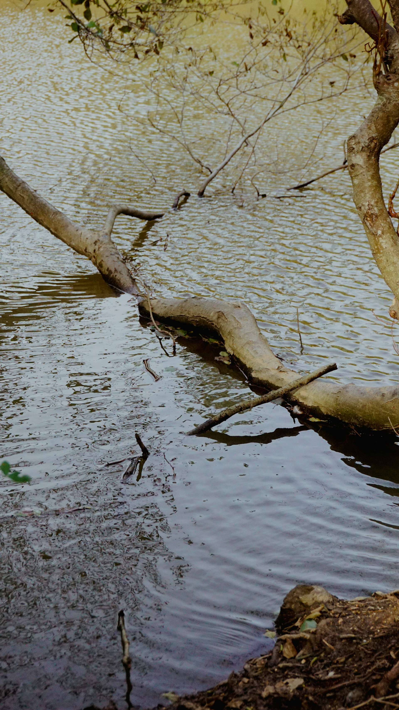
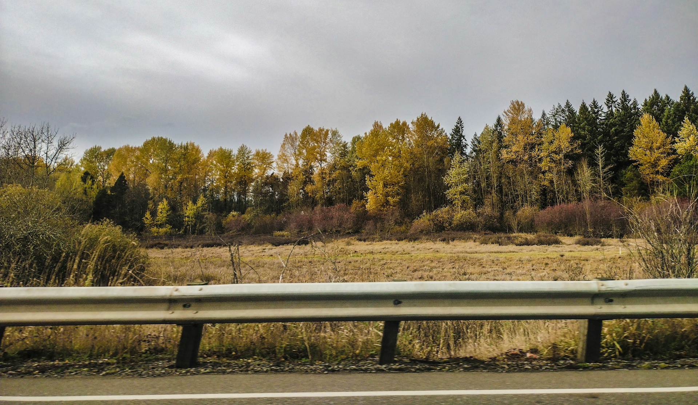
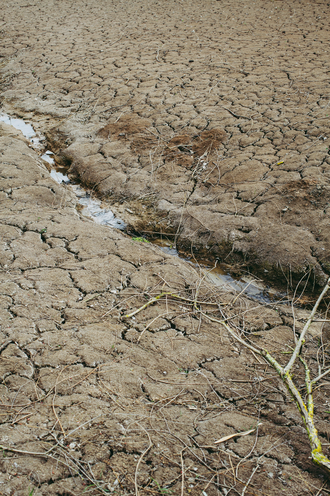
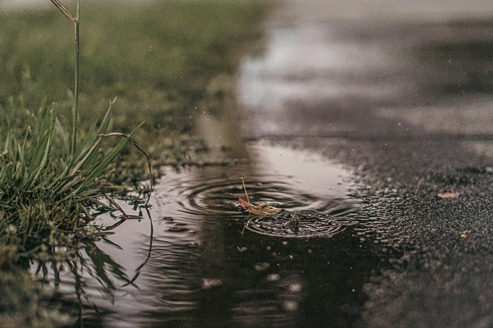

Hydrologi
Vägbanken fungerar som en barriär som avbryter vattenflöden. Våtmarker är helt beroende av rätt vattennivå och störningar leder till uttorkning på ena sidan och översvämning på andra.
Så mycket öppen våtmark har gått förlorad till vägar, järnvägar och bebyggelse.
Vägar, järnvägar och byggnationer påverkar våtmarker över hela Sverige och omfattningen varierar mellan olika län. I vissa områden är den exploaterade ytan stor medan påverkan i andra län är större i förhållande till den totala våtmarksarealen.
Diagrammen och kartan nedan visar hur exploateringen har utvecklats mellan 2020 och 2024 och vilka områden som påverkats mest.
Diagrammet visar exploaterad våtmark uppdelat efter typ av infrastruktur. Norrbottens län har störst total exploaterad yta med vägar som den dominerande faktorn.
Skillnaden mellan absoluta siffror och relativa andelar är betydande i detta diagram. Norrbotten har enorma våtmarksområden på över 1,6 miljoner hektar öppen våtmark. Men trots att länet har störst absolut exploatering, är det bara en liten andel av deras totala våtmark. Med detta i åtanke kan mindre län i södra Sverige ha exploaterat en mycket större andel av sina totala våtmarker.
Den direkta exploateringen visar tydligt att vägar tar mer yta än järnvägar och byggnader. En genomsnittlig motorväg är 20-30 meter bred medan en järnväg endast är 5-10 meter bred.
Vägar täcker också större sammanhängande områden än järnvägar. En enda väg kan sträcka sig genom flera län och dela upp våtmarkerna i mindre isolerade bitar. Byggnader är oftast lokaliserade till ett begränsat område och påverkar därför en mindre yta.
Vägar kräver dessutom ofta sidofunktioner som parkeringsplatser, rastplatser och serviceområden som tillsammans tar ytterligare mark. En järnväg är i grunden en smal linje medan en väg är ett helt infrastruktursystem.
Kartan visar hur stor andel av varje läns öppna våtmark som är exploaterad av vägar, järnvägar och byggnader. Den södra delen av Sverige har den högsta andelen exploaterad våtmark i förhållande till den totala öppna våtmarken.
Kartan visar endast öppen våtmark. Öppen våtmark är myrar och kärr utan trädtäckning. Skogsbevuxen våtmark ingår inte eftersom Naturvårdsverkets NMD-Data klassificerar det som skogsmark. Det innebär att den totala våtmarksarealen är större än vad som visas på kartan. Öppen våtmark är den dominerande och mest väldefinierade kategorin vilket gör den till det mest tillförlitliga måttet att jämföra exploateringsgrad mellan alla Sveriges län.
NMD2018, Naturvårdsverket · SCB MI1303 – Exploatering av våtmark 2024
Källa: NMD2018, Naturvårdsverket · SCB MI1303 – Exploatering av våtmark 2024
Siffrorna berättar bara halva sanningen. Den indirekta påverkan från vägbyggen är ofta större än den direkta exploateringen. När en väg dras genom en våtmark händer flera saker som påverkar ett mycket större område än själva vägen (Suarez-Rojas & Widmark, 2025).
Den indirekta påverkan från en väg genom en våtmark kan vara 5-10 gånger större än den direkta exploateringen. En 100 meter lång vägsträcka som tar 0,3 hektar direkt kan påverka upp till 3 hektar våtmark indirekt genom dränering och störd hydrologi.

Vägbanken fungerar som en barriär som avbryter vattenflöden. Våtmarker är helt beroende av rätt vattennivå och störningar leder till uttorkning på ena sidan och översvämning på andra.

Vägen kapar ekosystemet i två delar. Djur kan inte längre röra sig fritt, växter isoleras och den biologiska mångfalden minskar drastiskt.

För att hålla vägen torr måste man dränera omkringliggande mark. Detta påverkar ofta våtmarker hundratals meter bort från själva vägen.

Vägdagvatten innehåller tungmetaller, salt och mikroplaster som rinner ner i våtmarken och förstör vattenkvaliteten.